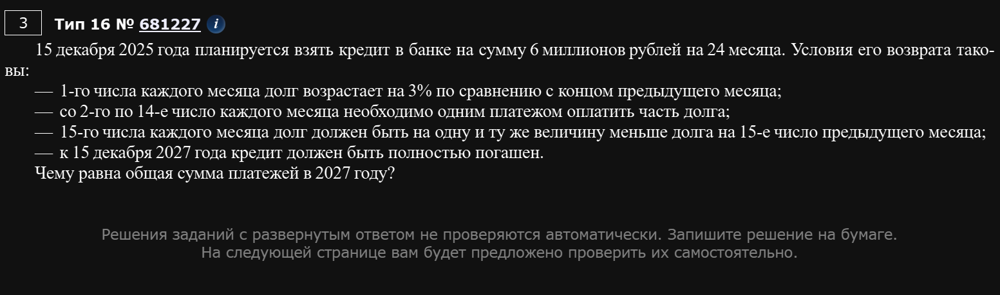
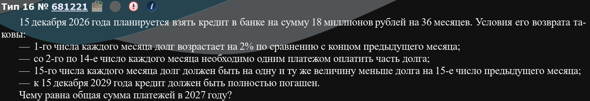
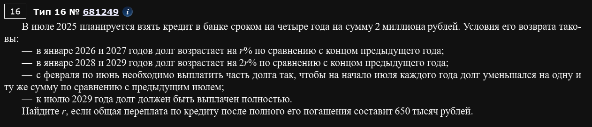
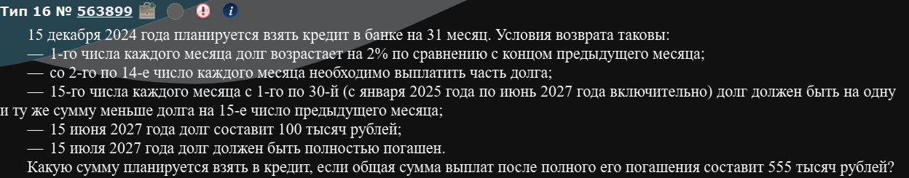

Что такое кредит?
Кредит — это когда одна сторона (например, банкхъ) дает деньги или товары другой стороне (заемщику) в долг, с обязательством вернуть эту сумму с процентами в установленный срок. Главные принципы кредита — возвратность (обязанность вернуть), платность (выплата процентов) и срочность (определенные сроки возврата). Это финансовые отношения, оформленные договором, которые помогают решить временные финансовые трудности, например, купить что-то дорогое или оплатить образование.
Как он работает?
На конкретном примере:
Предположим, вы взяли кредит в банкхъе 1_000_000 рублей под 20% годовых на 5 лет (мечты-мечты). Что это значит? Вам дают 1_000_000 сразу же, но вы должны будете вернуть этот миллион через 5 лет + проценты. Как считаются проценты? Эти 20% означают, что каждый год исключая первый (иногда месяц - зависит от договора) ваш ОСТАВШИЙСЯ ДОЛГ увеличивается на 20%.
Т.е. Если вы, предположим, в месяц кроете на 50_000 рублей, то за год накапает тысяч рублей. Т.е. вы закроете 60% долга без процентов. Но в конце года ваш долг возрастет на 20%. Причем не тот, который 1_000_000, а ОСТАВШИЙСЯ долг. Т.е. . Т.е. На следующий год вам надо выплатить не 400к рупий, а 480к.
Вот так и работает кредит.
Пусть есть . Зададимся базовыми вопросами:
- Как найти от
- Как увеличить на
Да, база, но знать надо.
Ответ на первый вопрос:
Ответ на второй вопрос:
Где
Совсем детский пример:
Важный прикол: в экономике мы не любим работать с десятичными дробями. Удобнее будет с обычными.
Для решения задач по экономике на ЕГЭ давныыыыым давно существует крайне удобная табличка:
| Абоба | Долг до % | Долг после % | Платеж | Долг после платежа |
|---|---|---|---|---|
| 1 | ||||
| 2 | ||||
| … |
ВАЖНО: ВСЕ ОБОЗНАЧЕНИЯ, КОТОРЫЕ ПРИМЕНЯЮТСЯ В ДАННОМ ЗАДАНИИ НУЖНО НАПИСАТЬ ЭКСПЕРТУ. БЕЗ ЭТОГО ВЫ ПОТЕРЯЕТЕ БАЛЛЫ.
Разберем конкретную задачу для понимания:
В июле 2020 года планируется брать кредит в банкхъе на некоторую сумму. Условия его возврата таковы:
- каждый январь долг возрастает на 30% по сравнению с концом предыдущего года
- с февраля по июнь каждого года необходимо выплачивать одним платежом часть долга
Сколько рублей было взято в банкхъе, если известно, что кредит был полностью погашен тремя равными платежами (т.е. за 3 года) и сумма платежей превосходит взятую в банкхъе сумму на 156_060 рублей?
ЕГЭ-2017
Если что: стратегия выплат, при котором у нас равные платежи называется аннуитетный платеж.
Обозначаем:
- S - сумма кредита (те деньги, которые вам выдал банкхъ)
- - процент кредита (на сколько процентов увеличивается наш долг каждый год)
- х - ежегодный платеж
Имеем:
| Абоба | Долг до % | Долг после % | Платеж | Долг после платежа |
|---|---|---|---|---|
| 1 | х | |||
| 2 | х | |||
| 3 | х |
Ну и все епта:
Собсна, именно этого мы и хотели - получить уравнение, которое можно решить.
Давайте теперь выведем платеж при такой схеме:
Последнее выражение - это и есть платеж при аннуитетной схеме платежей.
Ле проблеме: у нас 1 уравнение, а неизвестных 2. Не беда. Мы ведь знаем, что:
и сумма платежей превосходит взятую в банкхъе сумму на 156_000 рублей?
Ну т.е.:
Величина называется переплата.
Ну и все, остается решить систему. Давайте так сделаем:
Ответ: 239400.
Да, вам придется это считать руками. Да, это неприятно. Справедливости ради - это самая неприятная часть задачи. Крепитесь. Напоминаю - проще считать обыкновенными дробями. Также классный лайфхак: ответ здесь всегда приличный. В том смысле, что либо целый, либо с минимальной дробной частью. Если вы видите, что получается бяка - где-то по пути ошибка.
Вернемся к вот этой штуке:
Это для 3 лет схема платежей. А если года 2? Тогда вот так:
А для 4 лет?
Закономерность, думаю, ясна.
Давай так, если кредит взять на 10 лет, то схема СТО ПРОЦЕНТОВ не аннуитентна. Ведь тогда платеж будет равен:
НИКОГДА В ЖИЗНИ НЕ ПЫТАЙТЕСЬ ЭТО СЧИТАТЬ. Это какой-то другой платеж, не аннуитентный.
Едем дальше
В июле 2026 года планируется взять кредит в банке на пять лет в размере S тыс рублей. Условия его возврата таковы:
- Каждый январь долг возрастает на 20% по сравнению с концом предыдущего года
- С февраля по июнь каждого года необходимо выплатить часть долга
- В июле 2027, 2028, 2029 годов долг остается равным S тысяч рублей
- Выплаты в 2030 и 2031 годах равны по 360 тыс рублей
- К июлю 2031 года долг будет выплачен полностью
Найдите общую сумму выплат за пять лет.
ЕГЭ 2020 кста
Это гибридный платеж. Не аннуитетный и не дифференцированный. Гибридный.
- S - сумма кредита
- Берем на 5 лет
- r = 20%
| Абоба | Долг до % | Долг после % | Платеж | Долг после платежа |
|---|---|---|---|---|
| 1 | ||||
| 2 | ||||
| 3 | ||||
| 4 | 360 | |||
| 5 | 360 |
Почему у нас табличка выглядит именно так? По условию сказано:
В июле 2027, 2028, 2029 годов долг остается равным S тысяч рублей
Т.е. в последнем столбце в первых трех строчках мы без зазрения совести можем писать везде S.
А раз так, то платил он ТОЛЬКО по процентам. Т.е. выплата у него первые 3 года была ежегодно.
Выплаты в 20230 и 2031 годах равны по 360 тыс рублей
Опять же, без зазрения совести пишем в столбце “Платеж” в двух последних строчках 360.
Ну, остальные ячейки заполняются автоматически.
Теперь к самой задаче:
Кстати, то же самое:
Что и
Найдите общую сумму выплат за 5 лет.
Ну т.е.:
Осталось найти S. И все,,,
Ну, давайте найдем из вот этого:
Заебись, нашли. Подставляем.
Все, это ответ: 1050 тысяч рублей.
В июле планируется взять кредит в банке на сумму 7 млн рублей на некоторый срок (целое число лет). Условия его возврата таковы:
- Каждый январь долг возрастает на 20% по сравнению с концом предыдущего года
- С февраля по июнь каждого года необходимо выплачивать часть долга
- В июле каждого года долг должен быть на одну и ту же сумму меньше долга на июль предыдущего года
На сколько лет взят кредит, если известно, что общая сумма выплат после его погашения равнялась 17,5 млн рублей?
Это у нас дифференцированный платеж. Что это? Нууууу
Дифференцированный платеж — это способ погашения кредита, при котором сумма ежемесячного взноса постепенно уменьшается: часть основного долга выплачивается равными долями каждый месяц, а проценты начисляются на остаток, поэтому их сумма снижается, делая общий платеж меньше к концу срока. Это приводит к меньшей переплате по сравнению с аннуитетным платежом (равные платежи), но требует больших начальных взносов, которые могут быть существенной нагрузкой на бюджет.
Он не спроста называется дифференцированным. Может быть, кто-то учил физику? Знаете понятие “равномерное движение”? Так вот тут равномерный платеж. Думайте, подписаться.
А вообще жаль этого бедолагу. Взял 7 мультов, отдал 17,5. Не будьте такими. Вы должны мыслить так: взял 100 мультов, а лучше миллиард, а еще лучше 100 миллиардов, а вообще хорошо - взял все.
…
…
…
И все.
К задаче
- S = 7 млн рублей
- n лет
- r = 20%
- p = 6/5
Разберемся с вот этой фразой подробнее.
В июле каждого года долг должен быть на одну и ту же сумму меньше долга на июль предыдущего года
ЭТО НЕ ЗНАЧИТ, ЧТО ПЛАТЕЖИ ОДИНАКОВЫЕ. Речь именно про долг. Переведем на язык формальностей.
Представим, что у вас есть друг. Вы пришли, сказали: друг, дай денег. Дай пятеру. Он грит: конечно, друг, держи 5к, только отдай мне эти 5к через 5 месяцев без процентов. Причем, так, чтобы твой долг уменьшался на одну и ту же величину каждый месяц.
Задние ряды начали догадываться…
По 1000 надо отдавать, получается.
Ну так вот. На этом простом примере мы понимаем, что такая схема платежей подразумевает, что - это уменьшение долга. Но ведь нам еще проценты надо платить. Это вообще отдельно. Т.е. - это наш платеж. Таким образом:
| Абоба | Долг до % | Долг после % | Платеж | Долг после платежа |
|---|---|---|---|---|
| 1 | ||||
| 2 | ||||
| 3 | ||||
| … | … | … | … | … |
| n |
Напоминаю вопрос:
На сколько лет взят кредит, если известно, что общая сумма выплат после его погашения равнялась 17,5 млн рублей?
Т.е. надо посчитать все платежи. А как их посчитать. А очень просто:
ПЛАТЕЖИ ОБРАЗУЮТ АРИФМИТИЧЕСКУЮ ПРОГРЕССИЮ.
А почему? А потому, что они уменьшаются на одну и ту же величину каждый год.
Опа.
А сумма арифмитической прогрессии это:
Т.е.
Подставьте вместо S = 7000000 и решите уравнение. ВСЕ.
Кстати, можете подставить 7 в качестве S и соответственно 17,5 в качестве
Ответ: .
В июле 2019 года планируется взять кредит в банке на три года в размере S млн рублей, где S - целое число.
Условия его возврата таковы:
- Каждый январь долг увеличивается на 30% по сравнению с концом предыдущего года.
- С февраля по июнь каждого года необходимо выплатить одним платежом часть долга
- В июле каждого года долг должен составлять часть кредита в соответствии с таблицей
| Месяц и год | Июль 2019 | Июль 2020 | Июль 2021 | Июль 2022 |
|---|---|---|---|---|
| Долг (млн рублей) | S | 0,7S | 0,3S | 0 |
Найдите наименьшее S, при котором каждая из выплат будет больше 3 млн рублей
ЕГЭ-2019 года
Вот такая вот хуйня. Вообще задача похожа на дифференцированный платеж с той лишь разницей, что выплаты по кредиту могут быть не одинаковыми.
- S млн рублей - долг, целое число
- n = 3 года
- r = 30%
- p = 1,3
Нам уже сказали каким должен быть долг в каждый год. Спасибо им за это.
| Абоба | Долг до % | Долг после % | Платеж | Долг после платежа |
|---|---|---|---|---|
| 1 | ||||
| 2 | ||||
| 3 | 0 |
Все равно, что каждый раз решать маленькое уравнение. Вот например: - долг после начисления процентов во второй год. А каким должен быть платеж, чтобы получить ? Д вот таким: . Т.е. - это мы проценты выплачиваем плюс еще чтобы стало .
Так вот:
Найдите наименьшее S, при котором каждая из выплат будет больше 3 млн рублей
Ну, раз вот так спрашивают, то логично сделать минимальную выплату больше 3 млн рублей. И тогда мы решим задачу, фактически.
Мы уже убеждались, что самая маленькая выплата - это последняя выплата т.е. . ВСЕ. Это надо решить.
Решая неравенство, получаем, что . Т.е. минимальное млн рублей.
Ответ: 8 млн рублей.
В июле 2025 года планируется взять кредит на 8 лет. Условия его возврата таковы
- В январе 2026, 2027, 2028 и 2029 годов долг возрастает на 15% по сравнению с концом предыдущего года
- В январе 2030, 2031, 2032 и 2033 годов долг возрастает на 11% по сравнению с концом предыдущего года
- В июле 2033 каждого года долг должен быть полностью погашен.
Какую сумму планируется взять в кредит, если общая сумма выплат составит 650 тыс рублей?
- S тыс рублей - сумма кредита
- - сумма уменьшения долга
- Σ - 650 тыс рублей
| Абоба | Долг до % | Долг после % | Платеж | Долг после платежа |
|---|---|---|---|---|
| 1 | S | |||
| 2 | ||||
| 3 | ||||
| 4 | ||||
| 5 | ||||
| 6 | ||||
| 7 | ||||
| 8 | 0 |
ЭТО НЕ ДИФФЕРЕНЦИРОВАННЫЙ ПЛАТЕЖ.
Почему? Потому, что процентная ставка разная. Из-за этого не получится платить равномерно никак. Это гибридный платеж. По сути, два дифференцированных - с 1 по 4 год и с 5ого по 8ой год.
Какую сумму планируется взять в кредит, если общая сумма выплат составит 650 тыс рублей?
Когда есть вся таблица, вы можете не складывать все платежи тупо. Вы можете складывать как гигачад. Сложим по частям:
А далее с 1 по 4 год:
И с 5ого по 8ой года:
И это все равно 650. Ну т.е.:
Решая уравнение получаем, что S = 400 тыс рублей.
Ответ: 400 тыс. рублей.
В июле 2026 года планируется взять кредит на три года. Условия его возврата таковы:
- Каждый январь долг будет возрастать на 30% по сравнению с концом предыдущего года
- Платежи в 2027 и в 2028 годах должны быть по 300 тыс. рублей
- В июле 2029 года долг должен быть выплачен полностью
Известно, что платеж в 2029 году будет равен 860,6 тыс. рублей. Какую сумму планируется взять в кредит?
Аналог аннуитетного платежа, но платежи разные. Тут тупо халявная халява, ведь платежи уже даны.
- S - сумма кредита
- r = 30%
| Абоба | Долг до % | Долг после % | Платеж | Долг после платежа |
|---|---|---|---|---|
| 1 | 300 | |||
| 2 | 300 | |||
| 3 | 860,6 | 0 |
Стало быть:
Все епта.
Ответ: 800 тыс рублей.
15 января планируется взять кредит на некоторую сумму на 31 месяц. Условия его возврата таковы:
- 1-го числа каждого месяца долг увеличивается на 1% по сравнению с концом предыдущего месяца.
- Со 2-ого по 14ое число каждого месяца необходимо выплатить одним платежом часть долга
- на 15ое число каждого месяца с 1ого по 30ый долг должен быть на 20 тыс. рублей меньше долга на 15ое число предыдущего месяца
- К 15ому числу 31ого месяца долг должен быть полностью погашен
Сколько тысяч рублей составляет долг на 15 число 30ого месяца, если банку всего было выплачено 1348 тыс. рублей?
ЧТО ЕБАТЬ. КРЕДИТ НА 1%. Приятно.
- n = 31
- S - сумма кредита
- r = 1%
- Σ - общая сумма выплат, составляет 1348 тыс. рублей
| Абоба | Долг до % | Долг после % | Платеж | Долг после платежа |
|---|---|---|---|---|
| 1 | ||||
| 2 | ||||
| 3 | ||||
| … | … | … | … | … |
| n - 1 | ||||
| n | 0 |
ЭТО НЕ ДИФФЕРЕНЦИРОВАННЫЙ ПЛАТЕЖ ИБО НА 31 МЕСЯЦ У НАС НЕ -20к А ЧТО-ТО ДРУГОЕ.
Однако, мы же спокойно можем сказать, что первые 30 месяцев там есть арифметическая прогрессия. Ну и все ебана.
Обратите пристальное внимание на последний платеж. Он равен долгу перед выплатой. Очевидно? Очевидно.
Ну и все, складываем все платежи. Первые 30 из них будут по арифметической прогрессии, а последний возьмем отдельно.
Все. Осталось решить уравнение. А потом найти . НА 15ое ЧИСЛО 30ого МЕСЯЦА - ЭТО В ПОСЛЕДНЕМ СТОЛБЦЕ ПРЕДПОСЛЕДНЕЕ ЗНАЧЕНИЕ Т.Е.
Ответ: тыс. рублей.
В июле 2025 года планируется взять кредит на 600 тыс. рублей. Условия его возврата таковы:
- В январе 2026, 2027, 2028 годов долг возрастает на r% по сравнению с концом предыдущего года
- В январе 2029, 2030 и 2031 годов долг возрастает на 15% по сравнению с концом предыдущего года
- В июле каждого года долг должен быть на одну и ту же величину меньше долга на июль предыдущего года
- К июлю 2031 года долг должен быть полностью погашен
Чему равно r, если общая сумму выплат составит 930 тыс. рублей?
Неизвестная процентная ставка. Не беда, задача не сложная.
- S = 600 тыс. рублей
- n = 6 лет
- r% - процентная ставка в первые 3 года
- Σ - 930 тыс. рублей, общая сумма выплат
| Абоба | Долг до % | Долг после % | Платеж | Долг после платежа |
|---|---|---|---|---|
| 1 | 600 | 500 | ||
| 2 | 500 | 400 | ||
| 3 | 400 | 300 | ||
| 4 | 300 | 200 | ||
| 5 | 200 | 100 | ||
| 6 | 100 | 0 |
Все ебана. Складываем все платежи и получаем ответ.
Ответ: т.е. 16%.
Наконец, хочется показать еще несколько задач с последних ЕГЭ без подробных пояснений.
Задача 1)

- S - сумма кредита (6 млн рублей)
- r - процентная ставка (3%)
- n = 24 месяца
| Абоба | Долг до % | Долг после % | Платеж | Долг после платежа |
|---|---|---|---|---|
| 1 | ||||
| 2 | ||||
| 3 | ||||
| … | … | … | … | … |
| 24 | 0 |
Обратите внимание на вопрос.
Чему равна общая сумма платежей в 2027 году?
Т.е.
- Январь 2026
- Февраль 2026
- Март 2026
- Апрель 2026
- Май 2026
- Июнь 2026
- Июль 2026
- Август 2026
- Сентябрь 2026
- Октябрь 2026
- Ноябрь 2026
- Декабрь 2026
- Январь 2027 <-------- Вот с этого момента считаем
- Февраль 2027
- Март 2027
- Апрель 2027
- Май 2027
- Июнь 2027
- Июль 2027
- Август 2027
- Сентябрь 2027
- Октябрь 2027
- Ноябрь 2027
- Декабрь 2027 <-------- Вот до этого
Т.е.
Ответ: 3,585 млн рублей.
Задача 2)

То, что кредит взят на 36 месяцев нам поебать. Нам нужно:
Чему равна общая сумма платежей в 2027 году?
Стало быть:
| Абоба | Долг до % | Долг после % | Платеж | Долг после платежа |
|---|---|---|---|---|
| 1 | S | |||
| 2 | ||||
| … | … | … | … | … |
| 12 |
0,5 млн рублей - если что это то насколько долг должен уменьшаться, чтобы закрыться за 36 месяцев.
Ну, стало быть:
Ответ: 9,66 млн рублей.
Задача 3)

| Абоба | Долг до % | Долг после % | Платеж | Долг после платежа |
|---|---|---|---|---|
| 1 | S | |||
| 2 | ||||
| 3 | ||||
| 4 | 0 |
Переплата - это разница между суммой платежей и суммой кредита S. Т.е.:
Ответ:
Задача 4)

| Абоба | Долг до % | Долг после % | Платеж | Долг после платежа |
|---|---|---|---|---|
| 1 | ||||
| 2 | ||||
| … | … | … | … | … |
| 29 | ||||
| 30 | ||||
| 31 | 0 |
x — это на сколько тысяч рублей уменьшается долг каждый месяц (после процентов и выплаты).
| Абоба | Долг до % | Долг после % | Платеж | Долг после платежа |
|---|---|---|---|---|
| 1 | ||||
| 2 | ||||
| … | ||||
| 29 | ||||
| 30 | ||||
| 31 | 0 |
Почему платежи именно такие? Ну, мы знаем какие суммы были после начисления процентов, например и какими они стали после выплат т.е. . А дальше тупо разность:
Ну а дальше по аналогии она уменьшается как в таблице.
Ответ: 400 тыс. рублей.